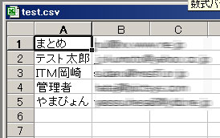

|
|
|
|
|
|
※ＯＳやソフトウェアのバージョンにより若干方法が異なる場合があります。
１、「ファイル」の「エクスポート」から「アドレス帳」を選びます。
２、「テキストファイル（ＣＳＶ）」を選び、「エクスポート」を押します。
３、「参照」を選びます。
４、適切な場所にファイル名をつけて、「保存」を押します。
５、先ほどの画面に戻りますので、「次へ」を押します。

６、 エクスポートするフィールドは「表示名」と「電子メールアドレス」のみにチェックを入れ、他のチェックは消してください
ＯＫであれば「完了」を押します。
７、「正常に終了しました」のメッセージを確認します。
※このときにこのメッセージが出ない場合は何らかの原因で失敗した可能性があります。手順１よりやり直してください。
８、 保存した場所に以下のようなアイコンのＣＳＶが出来上がりますので、そのファイルを開きます。
９、一行目に「表示名」「電子メールアドレス」と入ったセルがありますので、一行目を消します。
消し方は左の１の行を右クリックし「削除」を選びます
１０、無事消えたら「ファイル」の「上書き保存」を選んで上書きをしたら終了です。

「OutlookからＣＳＶファイルを作る方法」はこちらから
|
|
|